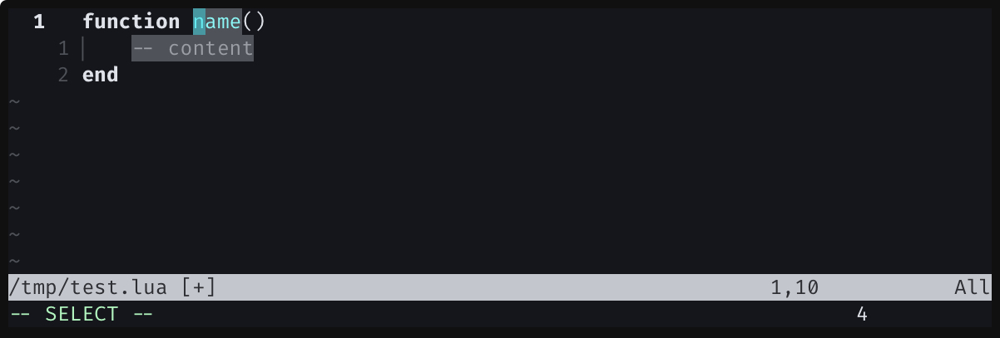
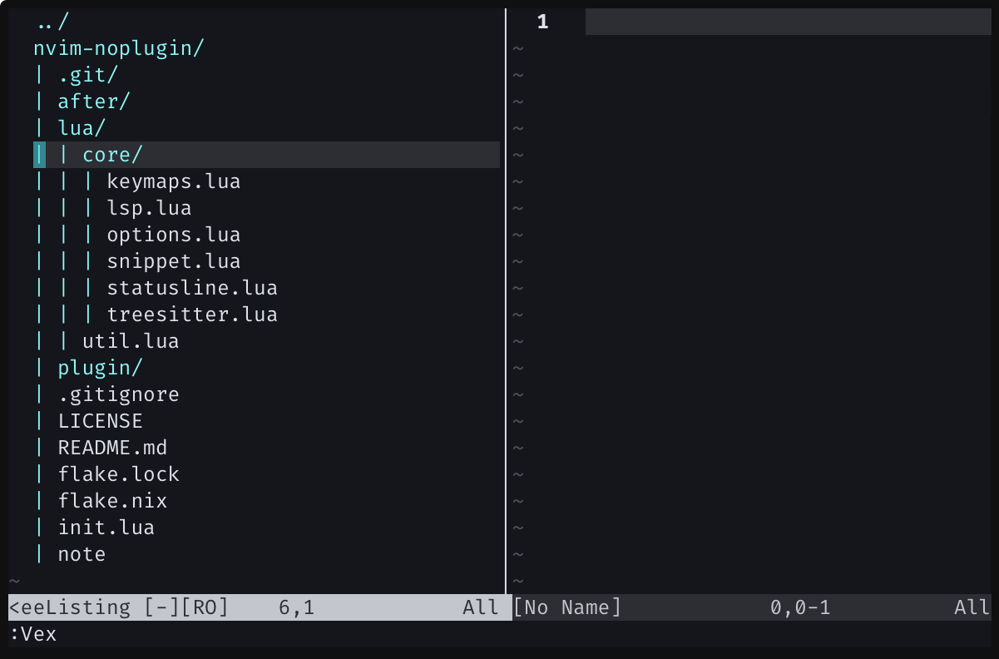

How to get human rights in Neovim without plugins (2025 edition)
31 December, 2024
Introduction
This is a rewrite of an article I wrote last year based on my PoC Neovim config project: NativeVim.
Plugins have become a natural part of the Neovim community, which has grown explosively starting with v0.5.0 released in 2021.
- lazy.nvim (or packer.nvim or rocks.nvim)
- nvim-lspconfig
- nvim-treesitter
- nvim-cmp (including several cmp related plugins)
- Luasnip (or nvim-snippets)
- mason.nvim
- Comment.nvim
- telescope.nvim (or fzf-lua)
etc
It is pretty common to find more than 10 plugins installed in most minimalistic Neovim config.
- Why do I need nvim-lspconfig or nvim-treesitter if Neovim officially supports LSP and tree-sitter?
- Why there are so many plugins needed to just get an autocompletion?
- Why should I install weird third-party plugins? I just want to use NEOVIM!
If you have one of these questions, you've come to the right place.
In this article, we will look at how to achieve the same functionality in native Neovim without those famous plugins, and find out what exactly each plugin does and why it is needed.
I'm not saying it's bad or useless to use plugins. This article's purpose is to rather show that it's possible and help you understand what those plugins do under hood.
Actually you don't need most of them
Most must have plugins are one of these three cases:
- abstracted & automated version of common setup,
- implementation of missing features which are now builtin,
- reimplementation of builtin functionalities providing advanced features.
So they can be easily replaced by setting up manually and using builtin features.
LSP setup without any plugins
Let's start with most basic ones. Plugins known for providing LSP integrations.
Replacing nvim-lspconfig
nvim-lspconfig falls into case 1: abstracted & automated version of common setup.
The Nvim LSP client does not live here. This is only a collection of LSP configures.
As indicated in the README, nvim-lspconfig is a plugin that provides default configurations for popular Language Servers.
Even without nvim-lspconfig, you can still connect Language Server to Neovim using the builtin APIs.
In stable Neovim (v0.10.3)
You can manually start Language Server with vim.lsp.start() api (:h vim.lsp.start().)
-- start the LSP and get the client id
-- it will re-use the running client if one is found matching name and root_dir
-- see `:h vim.lsp.start()` for more info
vim.lsp.start({
name = "lua_ls",
cmd = { "lua-language-server" },
root_dir = vim.fs.root(0, { ".luarc.json", ".luarc.jsonc", ".luacheckrc", ".stylua.toml", "stylua.toml", "selene.toml", "selene.yml", ".git" }),
})
And you can make an AutoCommand to run each Language Servers in specific filetypes.
---@type table<string, vim.lsp.ClientConfig>
local servers = {
lua_ls = {
cmd = { "lua-language-server" },
root_markers = { ".luarc.json", ".luarc.jsonc", ".luacheckrc", ".stylua.toml", "stylua.toml", "selene.toml", "selene.yml", ".git" },
filetypes = { "lua" },
},
-- add more server configs here
}
local group = vim.api.nvim_create_augroup("user.lsp.start", {})
for name, config in pairs(servers) do
vim.api.nvim_create_autocmd("FileType", {
group = group,
pattern = config.filetypes,
callback = function(ev)
config.name = name
if config.root_markers then
config.root_dir = vim.fs.root(ev.buf, config.root_markers)
end
vim.lsp.start(config, { bufnr = ev.buf })
end,
})
end
Now configured language servers will automatically connected to Neovim when you open filetypes defined in servers.*.filetypes table.
In nightly Neovim (v0.11+)
Nightly version of Neovim introduces new way to configure language servers with vim.lsp.config() and vim.lsp.enable() apis.
LSP setup is divided to two parts: configuring & enabling. Configuring a LSP client means you define a LSP client with your preferred setup. Enabling a LSP client means you tell Neovim that you are going to use the configured LSP client.
Here is an example setup for setting up lua-language-server with lua_ls as a client name.
init.lua
vim.lsp.config('lua_ls', {
cmd = { "lua-language-server" },
root_markers = { ".luarc.json", ".luarc.jsonc", ".luacheckrc", ".stylua.toml", "stylua.toml", "selene.toml", "selene.yml", ".git" },
filetypes = { "lua" },
})
-- add more server configs here
vim.lsp.enable('lua_ls')
-- enable other configured servers here
Write this in your init.lua file and reload Neovim. You can see lua-language-server is attached to buffer when you open a lua file. You can see the attached LSP clients via :checkhealth vim.lsp command which gives informations similar to :LspInfo from nvim-lspconfig.
You can also put language server configuration in lsp/*.lua files instead of executing vim.lsp.config() api.
lsp/lua_ls.lua
---@type table<string, vim.lsp.Config>
return {
cmd = { "lua-language-server" },
root_markers = { ".luarc.json", ".luarc.jsonc", ".luacheckrc", ".stylua.toml", "stylua.toml", "selene.toml", "selene.yml", ".git" },
filetypes = { "lua" },
}
init.lua
vim.lsp.enable('lua_ls')
Seems familiar? This can directly replace require("lspconfig").lua_ls.setup() from nvim-lspconfig.
Replacing mason.nvim
mason.nvim is a package manager inside Neovim which can install tools like Language Servers, Debug Servers, Formatters and Linters.
In other words, if you install the tool manually outside of Neovim, mason.nvim is not necessary. For example, typescript-language-server can be installed as follows.
npm install -g typescript-language-server
You can use whatever package manager you like instead of npm of course.
Builtin LSP/diagnostic keymaps/options
Many keymaps and options are now builtin especially from upcoming v0.11 release. (:h lsp-defaults)
If you are using v0.10, here is a snippet adding missing LSP related keybindings in v0.10.
vim.keymap.set({ "n", "x" }, "]d", vim.diagnostic.goto_next, { desc = "Next Diagnostic" })
vim.keymap.set({ "n", "x" }, "[d", vim.diagnostic.goto_prev, { desc = "Prev Diagnostic" })
vim.api.nvim_create_autocmd("LspAttach", {
callback = function(ev)
vim.keymap.set("n", "grn", vim.lsp.buf.rename, { buffer = ev.buf })
vim.keymap.set("n", "gra", vim.lsp.buf.code_action, { buffer = ev.buf })
vim.keymap.set("n", "grr", vim.lsp.buf.references, { buffer = ev.buf })
vim.keymap.set("n", "gri", vim.lsp.buf.implementation, { buffer = ev.buf })
vim.keymap.set("n", "gO", vim.lsp.buf.document_symbol, { buffer = ev.buf })
vim.keymap.set("i", "<c-s>", vim.lsp.buf.signature_help, { buffer = ev.buf })
end,
})
Builtin completion engine
NOTE: While completion is part of LSP features, it can do other other stuffs without LSP. That's why I'm treating Completions in separate section from LSP.
Some surprising facts:
- Vim natively supports completion including the UI. (
:h ins-completion) - There are user-configurable completion sources for Vim. (
:h 'omnifunc') - Neovim provides completion source in LSP (
:h vim.lsp.omnifunc()) - Actually, it provides more convenience sources like tree-sitter Queries. (
:h vim.treesitter.query.omnifunc()) - Neovim will have
fuzzyoption in'completeopt'option starting from v0.11 (:h 'completeopt')
I'll compare with nvim-cmp ecosystem because it is most mature and famous completion plugin at this moment. But points below also applies to other common completion plugins like coq_nvim, mini.completion, blink.cmp and care.nvim.
Replacing cmp-nvim-lsp (LSP completions)
Neovim automatically sets 'omnifunc' option to vim.lsp.omnifunc() when Language Server is attached.
Below is how internal code making this possible:
vim.api.nvim_create_autocmd("LspAttach", {
callback = function(ev)
vim.bo[ev.buf].omnifunc = "v:lua.vim.lsp.omnifunc"
end,
})
This auto-command is one of defaults in Neovim since v0.10 so you don't need to set this manually in your config.
Enabling LSP completion
However, we can't say that this alone properly utilizes the completion provided by LSP. Since
'omnifunc'does not provide features such as snippet or auto-import, support for these must be set separately. Fortunately, starting from v0.11, Neovim added this feature as a built-in API.vim.api.nvim_create_autocmd("LspAttach", { callback = function(ev) vim.lsp.completion.enable(true, ev.data.client_id, ev.buf, { autotrigger = false }) end, })After
vim.lsp.completion.enable()is executed, Neovim performs the additional operations provided by the LSP in buffer where user auto-completes with LSP. (e.g. expanding a snippet or modifying part of the code like auto-import)
Replacing cmp-path (path completions)
Vim has a built-in filename completion (:h i_CTRL-X_CTRL-F)
This is based on where
nvimis executed, not current file path.
Replacing cmp-buffer (buffer text completions)
Vim has a builtin buffer text completion.
:h i_CTRL-X_CTRL-P:h i_CTRL-X_CTRL-N:h i_CTRL-P:h i_CTRL-N
advanced builtin completion features
- line completion (
:h i_CTRL-X_CTRL-L) - legacy omnicompletions (
:h compl-omni-filetypes) - tree-sitter query completion (
:h vim.treesitter.query.omnifunc())
Why would I use nvim-cmp then?
While builtin completions are powerful enough, it is quite reasonable to use external completion plugins. External completion plugins not depending on builtin completions usually have better performance and provide way more customizability of how it looks and behaves.
Builtin snippet API
Lets have the snippet feature without plugins like Luasnip or nvim-snippets.
Neovim has built-in snippet API in vim.snippet since v0.10, so most LSP-provided snippets just work (since v0.11, if you enable the LSP completion.) But it still don't provide native API to make user-defined snippets that expands on specific keywords or trigger keymaps.
Instead, there is a similar feature called abbreviation (:h Abbreviations.) To briefly explain, if you register abbreviation in insert mode with :iab ms Microsoft, ms<space> or ms<cr> will be replaced with Microsoft<space> and Microsoft<cr>, respectively. This abbreviation can be triggered with the keymap <c-]> in addition to special characters such as <space>, <cr> or ()[]{}<>'",..
By using abbreviation and vim.snippet, we can implement the following snippet API.
---@param trigger string trigger string for snippet
---@param body string snippet text that will be expanded
---@param opts? vim.keymap.set.Opts
---
---Refer to <https://microsoft.github.io/language-server-protocol/specification/#snippet_syntax>
---for the specification of valid body.
function vim.snippet.add(trigger, body, opts)
vim.keymap.set("ia", trigger, function()
-- If abbrev is expanded with keys like "(", ")", "<cr>", "<space>",
-- don't expand the snippet. Only accept "<c-]>" as a trigger key.
local c = vim.fn.nr2char(vim.fn.getchar(0))
if c ~= "" then
vim.api.nvim_feedkeys(trigger .. c, "i", true)
return
end
vim.snippet.expand(body)
end, opts)
end
With this, you can add custom snippets with vim.snippet.add() and use <c-]> keymap to expand the snippets.
Example of some lua function definition snippets:
vim.snippet.add(
"fn",
"function ${1:name}($2)\n\t${3:-- content}\nend",
{ buffer = 0 }
)
vim.snippet.add(
"lfn",
"local function ${1:name}($2)\n\t${3:-- content}\nend",
{ buffer = 0 }
)
put this in after/ftplugin/lua.lua
So when you type fn<c-]> in lua file, it will be expanded to this:

TreeSitter setup without any plugins
Replacing nvim-treesitter
Long ago, it was near impossible to use tree-sitter parsers or tree-sitter related plugins in Neovim without nvim-treesitter because most tree-sitter APIs lived in nvim-treesitter. But nowadays, those APIs are included in Neovim core, so you can use tree-sitter parsers without nvim-treesitter.
You can attach tree-sitter parser to current buffer with vim.treesitter.start().
vim.api.nvim_create_autocmd("FileType", {
callback = function(ev)
pcall(vim.treesitter.start, ev.buf)
end
})
We use pcall here to safely execute vim.treesitter.start(ev.buf) because it may fail if no parser is registered for the filetype of the current buffer.
Install tree-sitter parser manually
:TSInstall command in nvim-treesitter clones Parser's git repository and built the parser from it. Some tree-sitter parsers include query statements (highlight.scm, fold.scm, etc.) related to the parser in the repository, but those may not match Neovim's spec, so the nvim-treesitter plugin includes query statements for all parsers.1
Fortunately, as of this writing, most of the tree-sitter parsers are available on luarocks.org. So you can easily install the tree-sitter parser package for Neovim using luarocks. These luarocks packages (aka. rocks) also include various queries (mostly taken from the nvim-treesitter repository) required to use each parser.
luarocks \
--lua-version=5.1 \
--tree=$HOME/.local/share/nvim/rocks \
install tree-sitter-rust
NOTE: replace
--treeoption to$HOME/AppData/Local/nvim-data/rocksif you are on Windows
With this script, you can install tree-sitter-rust parser and its query files in $HOME/.local/share/nvim/rocks/lib/luarocks/rock-5.1/tree-sitter-rust/0.0.27-1 where 0.0.27 is the installed version. You can add this path to 'packpath' and Neovim will recognize and register the parser with bundled queries.
# create target packpath directory (`treesitter` is arbitrary)
mkdir -p $HOME/.local/share/nvim/site/pack/treesitter/start
# symlink installed rock to packpath
ln -sf \
$HOME/.local/share/nvim/rocks/lib/luarocks/rocks-5.1/tree-sitter-rust/0.0.27-1 \
$HOME/.local/share/nvim/site/pack/treesitter/start/tree-sitter-rust
You can use :checkhealth vim.treesitter to see if installed parser is registered without problem.
Some tree-sitter parsers requires other packages to work properly. For example,
tree-sitter-javascriptandtree-sitter-typescriptdepend ontree-sitter-ecma. You don't need to care about this in installation step as luarocks will handle dependencies automatically but you should manually put those inpackpath.
Builtin folding method (using TreeSitter)
Although plugins like [nvim-ufo] claims to provide better performance, it is 100% possible to use builtin folding method instead of third party ones. You can use builtin TreeSitter based folding method with following options.
vim.o.foldenable = true
vim.o.foldlevel = 99
vim.o.foldmethod = "expr"
vim.o.foldexpr = "v:lua.vim.treesitter.foldexpr()"
For related keymaps, please refer to :h folds.
Builtin Commenting
Neovim includes commenting support since v0.10. So you don't need additional plugin for commenting unless you want some advanced features. See :h commenting.
tldr;
gccin normal mode,gcin visual mode.
Builtin File Tree
Yes, you read it correct. Neovim does have builtin file tree view. Well it is not a side bar style file tree, but you can see folders in tree view.
Netrw, which is one of first-party plugins providing ability to open a folder in vim actually has multiple display styles.
Try open a directory with Neovim and press i three times.
Or put this somewhere in your config and open a directory.
vim.g.netrw_list_style = 3

You can press SHIFT_ENTER to toggle each folders.
Check :h netrw for more info.
You may already have a plugin - fzf
It is extremely rare but some system-wide softwares even ship with vim plugins. One example is fzf. Which contains vim plugin in its main repository.
NOTE: This is a vim plugin shipped with fzf and not dedicated vim/neovim plugin like fzf.vim and fzf-lua. You can read plugin readme here.
homebrew
vim.opt.runtimepath:append("/opt/homebrew/opt/fzf")
AUR
If you installed fzf from AUR, system package managers will automatically setup vim plugin as system-wide config.
manual install from source
-- replace `~/.fzf` to path where you cloned the fzf repository
vim.opt.runtimepath:append("~/.fzf")
Conclusion
So far, we’ve explored how to set up Neovim in its purest form, without relying on external plugins.
As I mentioned in the Introduction, this is not to suggest that plugins are bad or unnecessary. Plugins serve specific purposes, and one of Neovim’s greatest strengths is its vast and diverse plugin ecosystem. Many plugins offer improved performance, extended functionality, or valuable abstractions that simplify configuration.
If you find better way of doing some abstractions or you made some cool new features, you can extract that config as a standalone plugin. That's how Neovim's plugin community has grown this far.
But using Neovim without plugins is entirely possible and really worth trying.
While I don’t use a strict zero-plugin configuration daily, my main Neovim setup avoids many must have plugins. I’ve also enjoyed experimenting with NativeVim configurations from time to time. Also, configuring NativeVim is fairly easier then other configs I've made because I can fully focus on my preferences and not on making decent IDE.
Neovim is already a decent IDE on itself.
Plugins can make it better, but that doesn't mean barebone Neovim is nothing.